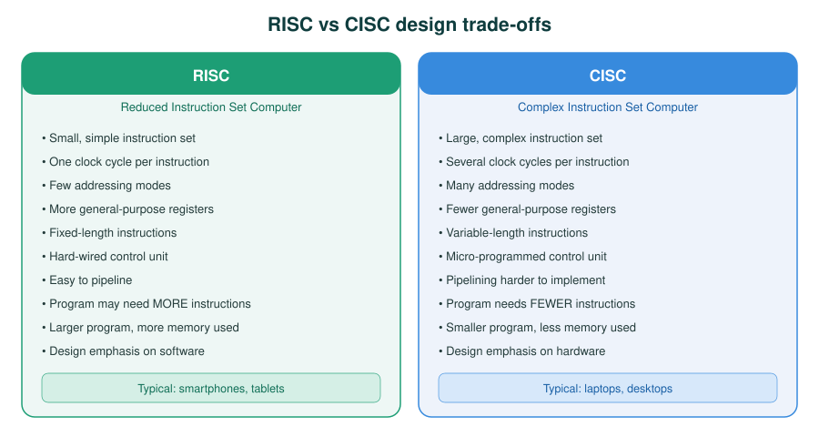
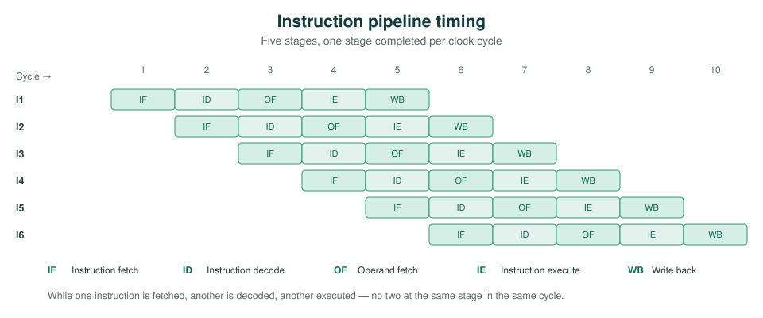
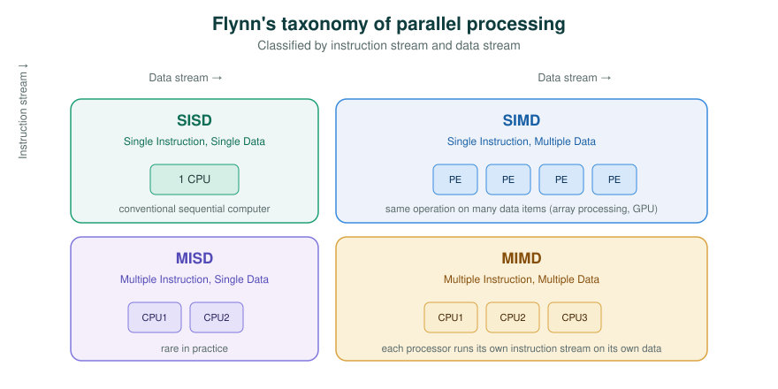
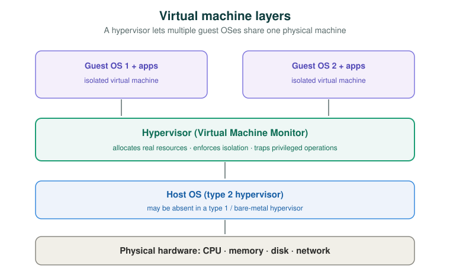

Processors, Parallel Processing and Virtual Machines
This section covers the five A2 exam points of §15.1: RISC and CISC processor designs (including interrupt handling), pipelining and registers in RISC, the four basic computer architectures, massively parallel computers, and the concept of a virtual machine.
RISC and CISC processors
Instruction sets
- A computer processor has an instruction set — the complete collection of machine-code instructions it can recognise and execute.
- The instruction set varies from one processor to another, and different design philosophies make different trade-offs between instruction complexity, clock cycles per instruction and hardware simplicity.
- There are two contrasting designs:
- Reduced Instruction Set Computer (RISC)
- Complex Instruction Set Computer (CISC)
RISC
- Reduced Instruction Set Computer (RISC) uses a smaller instruction set built from simple instructions.
- Each instruction generally takes one clock cycle to execute, which makes RISC well suited to pipelining.
- Uses fixed-length / fixed-format instructions and few addressing modes, so decoding is simple.
- Uses many general-purpose registers and relies heavily on software / the compiler (design emphasis is on the software).
- Uses a hard-wired control unit and relatively few transistors.
- A RISC program may require more instructions, because each instruction performs a simpler operation.
- Typically used in smartphones and tablets.
CISC
- Complex Instruction Set Computer (CISC) uses a larger instruction set, including complex, multi-operation instructions.
- Instructions are variable length and may take more than one clock cycle to execute; decoding is complex and uses microcode / a programmable control unit.
- Uses many addressing modes but fewer general-purpose registers.
- Instructions take up less space in memory (fewer instructions are needed).
- Design emphasis is on the hardware; makes frequent use of cache memory.
- Typically used in laptops and desktop computers.
RISC and CISC compared ★
| Feature | RISC | CISC |
|---|---|---|
| Instruction set size | Small | Large |
| Instruction complexity | Simple | Complex |
| Instruction length | Fixed | Variable |
| Clock cycles per instruction | One | Multiple |
| Addressing modes | Few | Many |
| General-purpose registers | Many | Few |
| Control unit | Hard-wired | Micro-programmed / programmable |
| Pipelining suitability | Well suited | Less suited |
| Compiler complexity | More complex | Less complex |
| Design emphasis | Software | Hardware |
| Power usage | Lower | Higher |
| Cost | Lower | Higher |
| Memory use | More (due to more instructions) | Less (fewer instructions) |
| Typical devices | Smartphones, tablets | Laptops, desktops |

- A program written for a RISC processor will not run directly on a CISC processor, and vice versa, because the instruction sets differ.
- A program written for one RISC processor may not necessarily run on another RISC processor if their instruction sets differ.
Interrupt handling on RISC and CISC
- The general concept of interrupts is covered in Chapter04-Interrupt.
- Both architectures support interrupts and aim to respond quickly and resume execution correctly; they differ in how much of the work is done in hardware.
| Feature | CISC | RISC |
|---|---|---|
| Instruction complexity | Complex instructions, often with built-in support for interrupt routines | Simple, fixed-length instructions; interrupt handling done with simpler routines |
| Interrupt handling | Often uses microcode and dedicated hardware instructions | Uses software-based handlers through general-purpose registers and simple instructions |
| Context switching | May have hardware support to save/restore processor state automatically | Typically handled in software, giving the OS more control but needing more instructions |
| Speed of response | Generally faster due to built-in support | Slower but more flexible and consistent across instructions |
Interrupt handling ★
The process that can be applied to either architecture:
- The processor detects an interrupt at the start or end of the fetch-execute cycle (raised by hardware, a timer or software).
- The current program is temporarily stopped and the status of each register is stored on the stack (context is saved); the interrupt vector identifies the correct ISR.
- The Interrupt Service Routine (ISR) is executed.
- Afterwards the registers are restored to their original status from the stack and the interrupted program resumes at the correct point.
- With pipelining, several instructions may still be in the pipeline when the interrupt arrives; this adds complexity. Instructions currently in operation are usually discarded except for the one at write back, the handler is applied to the remaining instruction, and the processor restarts with the next instruction in sequence once the interrupt has been serviced.
Reduced Instruction Set Computers (RISC) is a type of processor.
Identify four features of a RISC processor. [4]
Answer
Q2 One mark per mark point (Max 4)
- MP1 low number of instruction formats // low number of instruction sets
- MP2 uses single-clock cycle instructions
- MP3 uses fixed length instructions
- MP4 uses many general-purpose registers
- MP5 works well with pipelining
- MP6 hard-wired control unit
- MP7 makes extensive use of RAM
- MP8 uses a low number of addressing modes
- MP9 the design emphasis is on the software.
Complex Instruction Set Computer (CISC) is a type of processor.
Identify four features of a CISC processor. [4]
Answer
Q8 One mark per mark point (Max 4)
- many instruction formats possible
- large instruction set
- many addressing modes available
- uses variable length / multi-operation instructions
- multi-clock cycle instructions
- complex decoding of instructions
- uses complex circuits
- makes frequent use of cache memory
- uses programmable control unit // uses micro-programmed control unit // uses hardwired control unit
- hardware needs to be able to handle more complex instructions convert into sub-instructions // Design emphasis is on the hardware.
Reduced Instruction Set Computers (RISC) and Complex Instruction Set Computers (CISC) are two types of processor.
(a) State two features of RISC processors. [2]
(b) Outline the process of interrupt handling as it could be applied to RISC or CISC processors. [3]
© Explain how pipelining affects interrupt handling for RISC processors. [3]
Answer
| Question | Answer | Marks |
|---|---|---|
| 11(a) | Any two of: • Uses hard-wired code/control units. • Uses relatively few instructions / simple instructions. • Uses relatively few addressing modes. • Makes use of a single-cycle for each instruction. • Makes use of fixed length / fixed format instructions. • Makes use of general-purpose registers. • Pipelining is straightforward to apply. • The design emphasis is on the software. • Processor chips require few transistors. |
2 |
| 11(b) | • Once the processor detects an interrupt at the start/end of the fetch-execute cycle… • …the current program is temporarily stopped and the status of each register stored on the stack. • After the interrupt has been serviced / the Interrupt Service Routine (ISR) has been executed… • …the registers can be restored to its original status before the interrupt was detected // …the data can be restored from the stack. |
3 |
| 11© | • Pipelining adds an additional complexity // there could be a number of instructions still in the pipeline when the interrupt is received. • All the instructions currently in operation are usually discarded except for the last one / the one at write back. • …the interrupt handler routine is applied to the remaining instruction. • Once the interrupt has been serviced the processor can restart with the next instruction in the sequence. |
3 |
Pipelining and registers in RISC processors
What is pipelining?
- Pipelining is the process of carrying out several instructions concurrently, with each instruction at a different stage of the fetch-execute cycle.
- One instruction can be fetched while the previous one is being decoded and the one before is being executed — this raises the number of instructions completed per unit time (throughput).
- Each stage / subtask is completed during one clock cycle, and no two instructions execute the same stage at the same clock cycle.
- On a branch, the pipeline may need to be flushed.
| Fetch | Decode | Execute | |
|---|---|---|---|
| Step 1 | Instruction A | ||
| Step 2 | Instruction B | Instruction A | |
| Step 3 | Instruction C | Instruction B | Instruction A |
| Step 4 | Instruction D | Instruction C | Instruction B |
The five pipeline stages ★
- Instruction fetch (IF) → instruction decode (ID) → operand fetch (OF) → instruction execute (IE) → write back result (WB).
- Each stage is carried out using a different register when pipelining is used, so a partially processed instruction can be handed from one stage to the next.
- The first instruction completes after five clock cycles; with six instructions, the last completes after ten cycles (no extra cycles per row).

Pipelining and registers in RISC ★
- RISC processors are designed for pipelining efficiency: one clock cycle per instruction, fixed-length instructions and a limited instruction set keep every stage short and uniform.
- A large general-purpose register file lets operands be held inside the CPU instead of repeatedly accessing RAM, reducing memory bottlenecks and avoiding stall cycles that would break the pipeline.
- Intermediate values are stored in registers between stages — e.g. instruction A loads a value into R1, instruction B computes R1 + R2 into R3, all within the CPU.
Pipelining hazards ★
- Structural hazard — two instructions need the same hardware resource in the same clock cycle (e.g. one memory used for both instruction fetch and operand fetch); removed by duplicating the resource (separate instruction and data caches) or by stalling.
- Data hazard — an instruction needs an operand that an earlier instruction has not yet written back; removed by forwarding, inserting a stall, or compiler re-ordering of independent instructions.
- Control hazard — a branch means the next address is unknown until the branch resolves; the pipeline is flushed and re-fetched, or branch prediction is used to keep it full.
Benefits of pipelining
| Advantage | Explanation |
|---|---|
| Increased throughput | Multiple instructions handled at once |
| Better use of CPU components | Fetch, decode and execute units are all in use simultaneously |
| Reduced idle time | No waiting between stages |
| Faster execution of an instruction stream | Even if individual instructions do not run faster |
(a) Describe the use of pipelining in Reduced Instruction Set Computers (RISC). [2]
(b) The processing of instructions is divided into five stages:
- instruction fetch (IF)
- instruction decode (ID)
- operand fetch (OF)
- instruction execute (IE)
- write back result (WB)
Each stage is carried out using a different register when pipelining is used.
Complete the table to show how a program consisting of six instructions would be completed using pipelining. [4]
| Processor stage | 1 | 2 | 3 | 4 | 5 | 6 | 7 | 8 | 9 | 10 | 11 | 12 |
|---|---|---|---|---|---|---|---|---|---|---|---|---|
| IF | ||||||||||||
| ID | ||||||||||||
| OF | ||||||||||||
| IE | ||||||||||||
| WB |
Answer
| Question | Answer | Marks |
|---|---|---|
| 8(a) | One mark per mark point (Max 2) • Pipelining allows several instructions to be processed simultaneously / concurrently • It increases CPU instruction throughput / number of instructions completed per unit time • Each instruction stage / subtask is completed during one clock cycle • No two instructions can execute the same stage at the same clock cycle • Example: while one instruction is being decoded, the next instruction can be fetched |
2 |
| 8(b) | One mark per mark point (Max 4) • First stage of first instruction in first clock cycle • First instruction successfully completed over five clock cycles • Remaining instructions completed over ten clock cycles … • … with no extra instruction sections added on any row. |
4 |
Example answer 1:
| Processor stage | 1 | 2 | 3 | 4 | 5 | 6 | 7 | 8 | 9 | 10 | 11 | 12 |
|---|---|---|---|---|---|---|---|---|---|---|---|---|
| IF | 1.1 | 2.1 | 3.1 | 4.1 | 5.1 | 6.1 | ||||||
| ID | 1.2 | 2.2 | 3.2 | 4.2 | 5.2 | 6.2 | ||||||
| OF | 1.3 | 2.3 | 3.3 | 4.3 | 5.3 | 6.3 | ||||||
| IE | 1.4 | 2.4 | 3.4 | 4.4 | 5.4 | 6.4 | ||||||
| WB | 1.5 | 2.5 | 3.5 | 4.5 | 5.5 | 6.5 |
Example answer 2:
| Processor stage | 1 | 2 | 3 | 4 | 5 | 6 | 7 | 8 | 9 | 10 | 11 | 12 |
|---|---|---|---|---|---|---|---|---|---|---|---|---|
| IF | A | B | C | D | E | F | ||||||
| ID | A | B | C | D | E | F | ||||||
| OF | A | B | C | D | E | F | ||||||
| IE | A | B | C | D | E | F | ||||||
| WB | A | B | C | D | E | F |
Reduced Instruction Set Computers (RISC) and Complex Instruction Set Computers (CISC) are two types of processor.
(a) Tick (✓) one box in each row to show if the statement applies to RISC or CISC processors. [2]
| Statement | RISC | CISC |
|---|---|---|
| uses a smaller instruction set | ||
| uses single-cycle instructions and limited addressing modes | ||
| uses fewer general-purpose registers | ||
| uses both hardwired and micro-coded control unit | ||
| uses a system where cache is split between data and instructions |
(b) Describe the process of pipelining during the fetch-execute cycle in RISC processors. [4]
Answer
10(a) Two marks for all five rows correct One mark for four rows correct
| Statement | RISC | CISC |
|---|---|---|
| uses a smaller instruction set | ✓ | |
| uses single-cycle instructions and limited addressing modes | ✓ | |
| uses fewer general-purpose registers | ✓ | |
| uses both hardwired and micro coded control unit | ✓ | |
| uses a system where cache is split between data and instructions | ✓ |
10(b) One mark for each correct point (Max 4)
- Instructions are divided into subtasks / 5 stages
- … Instruction fetch / IF, Instruction decode / ID, operand fetch / OF, opcode/instruction execute IE, result store / write back result / WB
- Each subtask is completed during one clock cycle
- No two instructions can execute their same stage at the same clock cycle
- The second instruction begins in the second clock cycle, while the first instruction has moved on to its second subtask.
- The third instruction begins in the third clock cycle while the first and second instructions move on to their second and third subtasks, respectively, etc.
The four basic computer architectures
Flynn's classification
- A computer architecture is the design and structure of a system — how it fetches, processes and stores data and instructions, and how CPU, memory and I/O work together.
- Flynn’s taxonomy classifies architectures by how many instruction streams and data streams they support:
- Single or Multiple Instruction stream
- Single or Multiple Data stream

SISD — Single Instruction, Single Data
- One processor executes one instruction on one data stream at a time.
- Data comes from a single source and one instruction is performed on it.
- Contains one processor, a control unit and a memory unit, executing instructions sequentially.
- Traditional serial (non-parallel) architecture; used in basic single-core processors.
SIMD — Single Instruction, Multiple Data
- One instruction is applied to many different data streams / elements simultaneously (e.g. array processors).
- The instructions may be performed sequentially, taking advantage of pipelining.
- Parallel computers with multiple processors, all performing the same operation in parallel.
- Ideal for graphics, image processing and scientific computation (e.g. GPUs).
MISD — Multiple Instruction, Single Data
- Multiple processors execute different operations on the same data stream.
- Each processor works on the same data stream independently.
- Very uncommon in practice; used in specialised fault-tolerant systems where each unit checks the same input differently.
MIMD — Multiple Instruction, Multiple Data
- Multiple processors execute different instructions on different sets of data; any processor can do so at any time.
- Processors operate asynchronously / independently, allowing full concurrent processing of separate tasks.
- Most modern multi-core processors, distributed systems and cloud computing use this model; flexible and scalable.
Summary table
| Architecture | Instruction stream | Data stream | Used in |
|---|---|---|---|
| SISD | Single | Single | Standard sequential / single-core processors |
| SIMD | Single | Multiple | Vector processing (e.g. GPUs), array processors |
| MISD | Multiple | Single | Specialised fault-tolerant systems |
| MIMD | Multiple | Multiple | Multi-core processors, parallel / distributed systems |
There are four basic categories of computer architecture. Single Instruction Single Data (SISD) is one architecture.
Identify the three other categories of computer architecture.
Describe each category that you identify. [6]
Architecture 1 / Description Architecture 2 / Description Architecture 3 / Description
Answer
| Question | Answer | Marks |
|---|---|---|
| 5 | • SIMD (1) many/array processors execute the same instruction using different data sets (1) • MISD (1) many processors (using different instructions) use the same data set (1) • MIMD (1) many processors (using different instructions) using different data sets (1) |
6 |
Describe the features of SISD and MIMD computer architectures. [4]
SISD:
MIMD:
Answer
5 One mark per mark point – SISD (Max 2)
- MP1: Single Instruction, Single Data (architecture). // Data is taken from a single source and a single instruction is performed on the data.
- MP2: Contains one processor, a control unit and a memory unit.
- MP3: …that executes instructions sequentially.
One mark per mark point – MIMD (Max 2)
- MP4: Multiple Instruction, Multiple Data (architecture). // At any time, any processor can execute different instructions on different sets of data.
- MP5: Contains many processors
- MP6: …that operate asynchronously / independently.
Describe the features of the SIMD and MISD computer architectures. [4]
SIMD:
MISD:
Answer
10 One mark per mark point – SIMD (Max 2)
- MP1: Single Instruction, Multiple Data (architecture) // Performs the same operation on multiple different data streams simultaneously.
- MP2: The instructions can be performed sequentially, taking advantage of pipelining.
- MP3: Parallel computers with multiple processors.
One mark per mark point – MISD (Max 2)
- MP4: Multiple Instruction, Single Data (architecture) // Performs different operations on the same data stream.
- MP5: Each processor works on the same data stream independently.
- MP6: Parallel computers with multiple processors.
Massively parallel computers
What are massively parallel computers?
- Massively parallel computers link many (thousands of) processors / computers together to form a more powerful single machine.
- All the processors work simultaneously on the same large problem, each responsible for its own part of the problem; the partial results are combined to give the final output.
- They tackle complex, large-scale tasks that can be decomposed into parallel work, e.g. scientific research, weather simulation, cryptography and AI.
Key characteristics
| Feature | Description |
|---|---|
| Many processors | Thousands of processors are linked and work together on different parts of the same task |
| Single machine | They form a more powerful ‘single machine’ |
| Simultaneous operation | All processors work simultaneously with coordinated / collaborative processing |
| Interconnects | Communication via interconnected data pathways / networks, or via shared pools of memory |
| Message passing | Processors communicate through a message interface / by sending messages |
| Shared or distributed memory | Each processor may have its own memory or access shared memory resources |
| Specialised software | Work must be distributed efficiently across the processors |
Massively parallel vs cluster computers
| Massively parallel computers | Cluster computers |
|---|---|
| Thousands of processors form a single tightly integrated system | Multiple independent systems networked together |
| Processors communicate continuously via shared architecture | Communication via a network, often loosely coupled |
| Acts like one machine with distributed processing | A group of co-operating systems |
| Higher performance, used for supercomputing tasks | More general-purpose or batch processing systems |
Link to computer architectures
- Massively parallel systems often use SIMD (one instruction applied to many data points) or MIMD (different instructions on different data, fully independently).
(a) Describe the characteristics of massively parallel computers. [3]
(b) State one difference and one similarity between the SIMD and MISD computer architectures. [2]
difference
similarity
Answer
| Question | Answer | Marks |
|---|---|---|
| 4(a) | One mark per mark point (Max 3) MP1 Massively parallel computers involve the linking together of many processors / computers MP2 … to form a more powerful ‘single machine’ MP3 All the processors work simultaneously on the same problem MP4 … with each processor being responsible for its own part of the problem MP5 … and communication being via interconnected data pathways/networks // … and communicate via shared pools of memory. |
3 |
| 4(b) | One mark for a difference (Max 1) MP1 SIMD systems all execute the same instruction and MISD systems perform different instructions MP2 SIMD systems work on many data streams/elements simultaneously; MISD systems all work on the same data source/element MP3 MISD systems are more complex than SISD systems // allow the reverse One mark for a similarity (Max 1) MP4 SIMD and MISD are both parallel systems MP5 SIMD and MISD using multiple processors MP6 SIMD and MISD both may be pipelined MP7 Neither SIMD nor MISD are well suited for sequential applications such as office productivity software or compilers |
2 |
Outline the characteristics of massively parallel computers. [3]
Answer
8 One mark per mark point (Max 3)
- A large number of computer processors / separate computers connected together (1)
- … simultaneously performing a set of coordinated computations // collaborative processing (1);
- network infrastructure (1);
- communicate using a message interface / by sending messages (1). (Max 3)
Virtual machines
What is a virtual machine?
- A virtual machine (VM) is a standalone environment running on a physical computer — it is not itself a physical machine.
- It emulates the hardware / software of another system: the VM software has all the components of a physical computer system, while the host machine provides the physical resources (RAM, ROM, processor, storage) and is controlled by a host operating system.
- This lets a user run software designed for a different operating system (e.g. Windows running a macOS VM), navigate its GUI and install software inside it.
- VM management software runs a hypervisor, which monitors all activity inside the VM.
Host, guest and hypervisor ★
- Host operating system — installed directly on the physical machine; controls all its physical resources, runs the virtual machine software and provides the user interface to operate it.
- Guest operating system — installed inside the VM; runs under the control of the host, controls/accesses the virtual hardware, and reaches real devices only through the VM and host OS.
- Hypervisor (virtual machine monitor) — sits between host and guest; creates and runs VMs, allocates host resources to each guest and traps privileged instructions so a guest cannot damage the host.

System VM versus process VM ★
- A system VM runs a complete operating system on virtual hardware (e.g. VMware / VirtualBox running a full OS, or a cloud instance).
- A process VM runs a single program on top of the host OS — e.g. the JVM executing Java bytecode.
Cross-platform and forwards compatibility
- Not all software runs on all operating systems (e.g. some macOS software is performance-locked to macOS); a VM of the required OS lets a user run it.
- Some software needs updating for the latest OS; a VM of an earlier release can run an application that has not received a forwards-compatibility update.
Benefits and limitations of VMs ★
Benefits (examples from the mark schemes):
- Compatibility — run applications / legacy software incompatible with the host; emulate old software; emulate a different instruction set architecture; try software on different OS on the same hardware; multiple OS environments on one computer.
- Protection — the guest has no effect on the host or other VMs; a guest can crash without crashing the host; suspicious software only infects the VM.
- Cost — no need to buy extra hardware, since multiple VMs run on the same machine.
Limitations:
- Performance — the guest is less efficient than a real machine because hardware is accessed indirectly through the host; response times cannot be measured accurately; multiple VMs compete for host resources.
- Dependence on the host — the VM is limited by the host’s features/weaknesses and not all hardware/software can be emulated.
- Complexity — building and maintaining a VM in-house is expensive, time-consuming and specialised.
VMs in software testing
- VMs create isolated test environments that leave the host unaffected: developers can monitor performance impact, test on a clean-slate system and test against various OS (macOS, Linux, Windows).
- VM software can emulate older hardware, so developers can build software that works on older machines and reach more users.
Consequences of running VMs
- VMs share the host’s hardware; over-use can exhaust CPU, disk space and memory. VM software (e.g. VirtualBox) can cap resources — e.g. 1 GB RAM and 20% CPU on a low-spec machine, up to 8 GB RAM and 50% CPU on a high-spec machine.
(a) Outline two benefits and two limitations of a virtual machine. [4]
Benefit 1 / Benefit 2 / Limitation 1 / Limitation 2
(b) Explain the roles of the host operating system and the guest operating system as used in a computer system running a virtual machine. [3]
Answer
| Question | Answer | Marks |
|---|---|---|
| 9(a) | One mark per mark point for up to two benefits (Max 2) • COMPATIBILITY e.g. Applications that aren’t compatible with the host computer can be run on the virtual machine // It is possible to emulate old software on a new system by running a compatible guest operating system as a virtual machine // Software can be tried on different OS on the same hardware. • PROTECTION e.g. The guest operating system has no effect on anything outside the virtual machine other virtual machines or the host computer // Virtual machines are useful for testing as they will not crash the host computer if something goes wrong // Easier to recover if software causes a system crash as virtual machine software protects the host system. • COST e.g. No need to buy extra computers / hardware as multiple virtual machines can be implemented on the same hardware. One mark per mark point for up to two benefits (Max 2) • PERFORMANCE e.g. The performance of the guest operating system will not be as good on a virtual machine as it would be on its own compatible machine because of the extra code / using more RAM/memory space // The performance of the VM is dependent on the capabilities of the host computer // Response times cannot be accurately measured using a virtual machine. • COMPLEXITY e.g. Building an in-house virtual machine can be expensive, time consuming and complex to maintain / set-up. • HARDWARE/SOFTWARE ISSUES e.g. Some hardware/software can’t be emulated with a virtual machine // Some of the host machine’s hardware can’t be directly accessed by the virtual machine. |
2 |
| 9b | One mark per mark point – host operating system (Max 2) • The host operating system is the normal operating system for the host computer / machine. • It has control of all the resources of the host computer / machine. // It can access the physical resources of the host computer / machine. • It provides a user interface to operate the virtual machine software. • It also runs the virtual machine software. One mark per mark point – guest operating system (Max 2) • The guest operating system runs within the virtual machine. • … it controls the virtual hardware/software during the emulation. // It accesses the actual hardware through the virtual machine and host operating system. • It provides a virtual user interface for the emulated hardware/software. • The guest operating system runs under the control of the host operating system. |
3 |
Explain what is meant by the term virtual machine. [4]
Answer
5 One mark per mark point (Max 4):
- MP1 A VM is a standalone environment running on a physical computer // A VM is not a physical machine;
- MP2 It can emulate the hardware/software of another system;
- MP3 VM software has all the components of a physical computer system;
- MP4 The host machine provides all the physical resources e.g. RAM/ROM;
- MP5 … and is controlled via a host operating system;
- MP6 The hypervisor runs between the host and guest operating systems;
- MP7 … and creates and runs virtual machines / allocates resources from the host to the guest OS;
- MP8 A guest OS runs within the VM/host OS;
- MP9 Multiple guest OS can run on the same VM // Multiple VMs can run on the same host OS;
- MP10 The guest operating system controls/accesses the virtual hardware/software.
Guidance: Do not allow benefits, drawbacks or uses, as the question is about the meaning of the term virtual machine, so requires a description.
A virtual machine may be used to emulate computer hardware using software.
Outline two benefits and two limitations of using a virtual machine. [4]
benefit 1 / benefit 2 / limitation 1 / limitation 2
Answer
5 One mark for each correct benefit (Max 2)
- MP1 Virtual machines can provide an instruction set architecture that is different to the actual computer. // Multiple operating system environments can be used on the same computer. // You can run an application / legacy software which is not compatible with the host computer / operating system using a guest operating system that is compatible with the application / software.
- MP2 Costs can be saved by not having to purchase additional hardware to test / use applications.
- MP3 The guest operating system can crash without affecting the host machine. // Guest operating system hosted on a virtual machine can be used without impacting anything outside the virtual machine. // When trying a piece of suspicious software, if it causes a problem, it will only infect the virtual machine.
One mark for each correct limitation (Max 2)
- MP4 Degraded performance. // A virtual machine is less efficient than real machines because they access hardware indirectly. // The virtual machine has to request access to the hardware from the host, which slows usability. // If multiple virtual machines are running on the same host, performance may be negatively affected if the host lacks sufficient power to deal with all their requirements.
- MP5 A virtual machine is dependent on the features / standard of the host machine. // It may be affected by the weaknesses of the host machine // Not all hardware/software can be emulated.
- MP6 Managing and maintaining a virtual machine can be quite complex/specialised.
Exam Question Index
All §15.1 past-paper sub-questions, grouped by exam point. The Source column gives Year Season Paper QQuestion(sub-part).
| Sub-question | Exam point | Source |
|---|---|---|
| P31 Q2 | RISC vs CISC — identify four RISC features | 2024 Winter P31 Q2 |
| P32 Q8 | RISC vs CISC — identify four CISC features | 2024 Winter P32 Q8 |
| P31 Q11(a) | RISC vs CISC — two RISC features | 2024 Summer P31 Q11(a) |
| P31 Q11(b) | RISC vs CISC — interrupt handling process | 2024 Summer P31 Q11(b) |
| P31 Q4(a) | RISC vs CISC — describe RISC and CISC | 2022 Summer P31 Q4(a) |
| P31 Q4(b) | RISC vs CISC — two differences | 2022 Summer P31 Q4(b) |
| P31 Q10(a) | RISC vs CISC — RISC/CISC statement table | 2022 Winter P31 Q10(a) |
| P31 Q11© | Pipelining & registers in RISC — effect on interrupt handling | 2024 Summer P31 Q11© |
| P32 Q8(a) | Pipelining & registers in RISC — use of pipelining | 2023 Summer P32 Q8(a) |
| P32 Q8(b) | Pipelining & registers in RISC — five-stage pipeline table | 2023 Summer P32 Q8(b) |
| P31 Q10(b) | Pipelining & registers in RISC — describe the process | 2022 Winter P31 Q10(b) |
| P33 Q4(b) | Four architectures — SIMD vs MISD difference/similarity | 2026 Summer P33 Q4(b) |
| P31 Q5 | Four architectures — SISD and MIMD features | 2023 Winter P31 Q5 |
| P32 Q10 | Four architectures — SIMD and MISD features | 2023 Winter P32 Q10 |
| P32 Q5 | Four architectures — identify and describe three categories | 2022 Summer P32 Q5 |
| P33 Q4(a) | Massively parallel computers — characteristics | 2026 Summer P33 Q4(a) |
| P31 Q8 | Massively parallel computers — outline characteristics | 2023 Summer P31 Q8 |
| P31 Q5 | Virtual machines — two benefits and two limitations | 2026 Summer P31 Q5 |
| P32 Q5 | Virtual machines — meaning of the term | 2026 Summer P32 Q5 |
| P32 Q9(a) | Virtual machines — benefits and limitations | 2024 Summer P32 Q9(a) |
| P32 Q9(b) | Virtual machines — host and guest OS roles | 2024 Summer P32 Q9(b) |
| P32 Q5 | Virtual machines — meaning, benefits and drawbacks | 2022 Winter P32 Q5 |
| P31 Q6 | Virtual machines — benefits and limitation | 2022 Summer P31 Q6 |